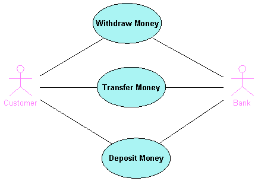
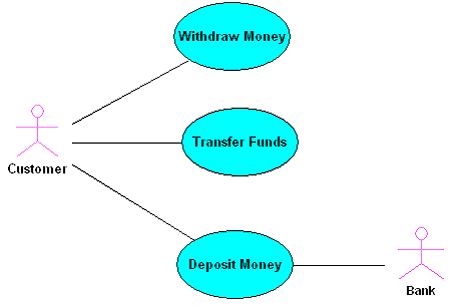

Working With Actors and Use Cases
Use Case diagrams are useful for showing the behavior of a system from the standpoint of a user, functional description, and graphic description of who will use a system. The UML Modeling feature enables you to do the following:
You can quickly populate a diagram with Actors. First, be sure the diagram you want populated is open in the Diagram editor.
- In the Modeling Palette, click the Actor icon
 .
.
- Click anywhere in the diagram.
The IDE adds an Actor to the diagram.
- To return the cursor to pointer mode, right-click.
You can also populate diagrams quickly with Use Cases.
- In the Modeling Palette, click the Use Case icon
 .
.
- Click anywhere in the diagram.
The IDE adds a Use Case to the diagram.
- In the Modeling Palette, click the Association icon
 .
.
- In the diagram, drag from one Actor to another, or drag between multiple Use Cases.
The IDE links the elements, and displays them and their relationships among the Actors and Use Case nodes in the Projects window.

You can use the Modeling Palette to quickly connect Actors and Use Cases.
- In the Modeling Palette, click the Association icon .
- In the diagram, click an Actor and then drag to one or more Use Cases.
The IDE connects the Actor with the Use Case(s).

Legal Notices